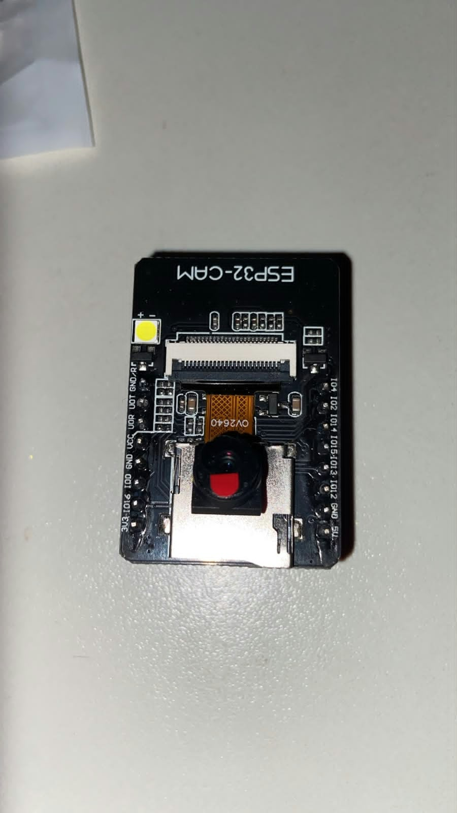
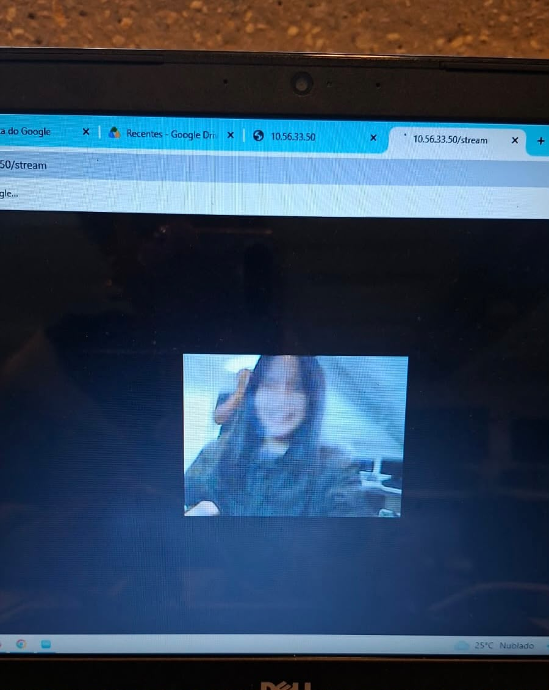

Vídeo demonstrativo
Assista à demonstração da câmera e observe como ela interage com o sistema.
Monitoramento, reconhecimento facial e interação automatizada na entrada da Casa Inteligente.
A câmera é um dos componentes utilizados para ampliar as possibilidades de monitoramento de uma casa inteligente. Ela pode captar imagens da entrada e, quando conectada a um sistema compatível, permitir que essas imagens sejam analisadas por um programa.
Em nosso projeto, a proposta é explorar a interação entre a câmera, o processamento de imagens e os demais dispositivos da maquete. Dependendo da implementação, a detecção de uma pessoa poderá iniciar uma mensagem de boas-vindas reproduzida pelo alto-falante.

Assista à demonstração da câmera e observe como ela interage com o sistema.
O reconhecimento facial utiliza técnicas de processamento de imagens para comparar características de um rosto com referências cadastradas. Ele não é a mesma coisa que detectar um rosto: a detecção identifica a presença de uma face, enquanto o reconhecimento busca determinar a quem ela corresponde.
A câmera registra imagens do ambiente para que possam ser processadas pelo sistema.
O software identifica a região da imagem onde existe um rosto.
Quando há reconhecimento facial implementado, o sistema compara características com referências previamente cadastradas.
Conforme as regras do projeto, o resultado pode gerar uma mensagem ou outra resposta previamente configurada.
Nesta parte vamos documentar os componentes, a placa utilizada, a tecnologia de processamento de imagens e a forma de comunicação com os demais dispositivos.
Para desenvolver o projeto, começamos pesquisando e testando diferentes formas de fazer os componentes funcionarem. Inicialmente, tentamos utilizar o Arduino, mas, como precisávamos de conexão Wi-Fi, optamos pelo ESP32 junto à ESP32-CAM, que atendiam melhor às nossas necessidades. Durante o processo, utilizamos inteligência artificial e contamos com a ajuda de colegas para desenvolver e corrigir os códigos, além de entender as conexões entre as placas. Também reorganizamos os fios e componentes para deixar a montagem mais organizada. A programação foi realizada no Arduino IDE, onde configuramos a conexão Wi-Fi e utilizamos o Monitor Serial para verificar o funcionamento. Depois, acessamos o endereço IP da câmera pelo navegador e conseguimos visualizar as imagens em tempo real. Por fim, integramos a câmera ao nosso site, permitindo selecionar componentes eletrônicos e registrar suas imagens, que são armazenadas em pastas organizadas. Essas imagens serão utilizadas futuramente para treinar uma inteligência artificial pelo Edge Impulse. Mesmo com algumas dificuldades, conseguimos encontrar soluções por meio de testes, pesquisas e colaboração, fazendo o projeto avançar.

Aqui será inserido o código real utilizado no projeto. Depois, vamos explicar cada parte para que os visitantes entendam como o sistema foi programado.
#include "esp_camera.h"
#include
const char* ssid = "LIVE TIM_9840_MH";
const char* password = "8765432a";
// AI Thinker ESP32-CAM
#define PWDN_GPIO_NUM 32
#define RESET_GPIO_NUM -1
#define XCLK_GPIO_NUM 0
#define SIOD_GPIO_NUM 26
#define SIOC_GPIO_NUM 27
#define Y9_GPIO_NUM 35
#define Y8_GPIO_NUM 34
#define Y7_GPIO_NUM 39
#define Y6_GPIO_NUM 36
#define Y5_GPIO_NUM 21
#define Y4_GPIO_NUM 19
#define Y3_GPIO_NUM 18
#define Y2_GPIO_NUM 5
#define VSYNC_GPIO_NUM 25
#define HREF_GPIO_NUM 23
#define PCLK_GPIO_NUM 22
#include "esp_http_server.h"
static esp_err_t stream_handler(httpd_req_t *req){
camera_fb_t * fb = NULL;
esp_err_t res = ESP_OK;
httpd_resp_set_type(req, "multipart/x-mixed-replace;boundary=frame");
while(true){
fb = esp_camera_fb_get();
if(!fb) break;
httpd_resp_send_chunk(req, "--frame\r\n", 9);
httpd_resp_send_chunk(req, "Content-Type: image/jpeg\r\n\r\n", 28);
httpd_resp_send_chunk(req, (const char*)fb->buf, fb->len);
httpd_resp_send_chunk(req, "\r\n", 2);
esp_camera_fb_return(fb);
}
return res;
}
void startCameraServer(){
httpd_config_t config = HTTPD_DEFAULT_CONFIG();
httpd_handle_t server = NULL;
httpd_uri_t stream_uri = {
.uri = "/stream",
.method = HTTP_GET,
.handler = stream_handler
};
httpd_start(&server, &config);
httpd_register_uri_handler(server, &stream_uri);
}
void setup(){
Serial.begin(115200);
camera_config_t config;
config.ledc_channel = LEDC_CHANNEL_0;
config.ledc_timer = LEDC_TIMER_0;
config.pin_d0 = Y2_GPIO_NUM;
config.pin_d1 = Y3_GPIO_NUM;
config.pin_d2 = Y4_GPIO_NUM;
config.pin_d3 = Y5_GPIO_NUM;
config.pin_d4 = Y6_GPIO_NUM;
config.pin_d5 = Y7_GPIO_NUM;
config.pin_d6 = Y8_GPIO_NUM;
config.pin_d7 = Y9_GPIO_NUM;
config.pin_xclk = XCLK_GPIO_NUM;
config.pin_pclk = PCLK_GPIO_NUM;
config.pin_vsync = VSYNC_GPIO_NUM;
config.pin_href = HREF_GPIO_NUM;
config.pin_sscb_sda = SIOD_GPIO_NUM;
config.pin_sscb_scl = SIOC_GPIO_NUM;
config.pin_pwdn = PWDN_GPIO_NUM;
config.pin_reset = RESET_GPIO_NUM;
config.xclk_freq_hz = 20000000;
config.pixel_format = PIXFORMAT_JPEG;
config.frame_size = FRAMESIZE_QVGA;
config.jpeg_quality = 12;
config.fb_count = 1;
esp_camera_init(&config);
WiFi.begin(ssid,password);
while(WiFi.status()!=WL_CONNECTED){
delay(500);
Serial.print(".");
}
Serial.println();
Serial.println(WiFi.localIP());
startCameraServer();
}
void loop(){}
Imagens faciais exigem cuidados com privacidade e acesso. Quando utilizadas para identificar pessoas, informações biométricas podem ser consideradas dados pessoais sensíveis pela legislação brasileira. Por isso, é importante explicar como as imagens são utilizadas e evitar armazenar dados desnecessários.